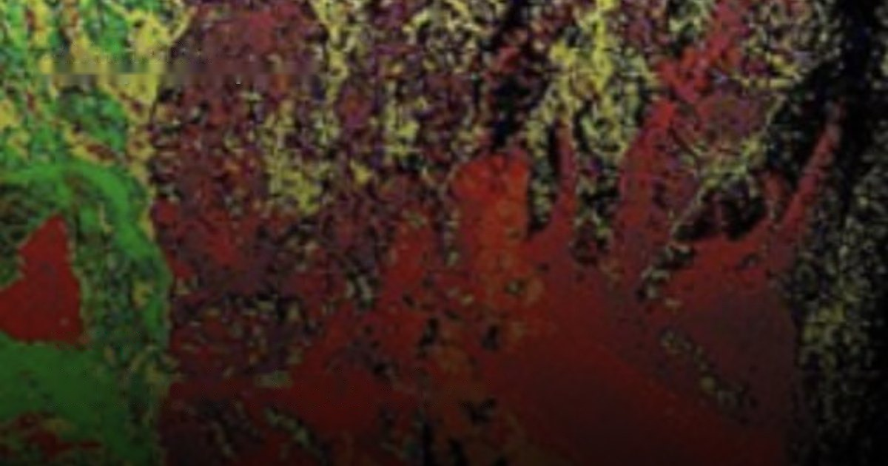
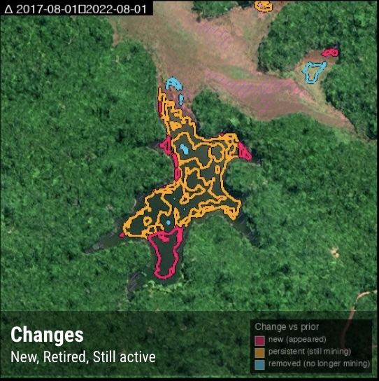

Alteration mapping, typed site detection, terrain and frequent imagery in one stack — greenfield targeting to regulatory monitoring.
Mining spans a long lifecycle — exploration, development, operation, compliance and closure — and each stage is a remote-sensing problem. Explorers need to find alteration before drilling; operators and ministries need frequent, site-level visibility into what is happening on the ground; regulators need to track environmental impact and verify reported production.
Historically this meant stitching together expensive tasked hyperspectral for minerals, occasional commercial DEMs for volumetrics, and manual photo-interpretation for change — none of it frequent, global, or affordable at country scale.
SkySpera brings the whole lifecycle onto one continuously-updated layer: Surface Mineral Map targets exploration, Mining Monitoring delivers typed, validated detection of every site, BaseDEM supports drill-pad terrain and volumetrics, and enhanced imagery ties it together.

Physics-enhanced true-colour — Sentinel-2 to 1 m and PlanetScope to 1.9 m — refreshed every 2–5 days (S2) to daily (PlanetScope), no hallucinations.
More info →
Ten calibrated spectral bands at 2–4 m — the analytical engine behind NDVI, moisture, burn and mineral indices.
More info →
A seamless, near-cloudless global basemap — 10 m source, 5 m physics-based Derived Resolution, 2.5 m Super-Resolution.
More info →
A global 1 m-post-spacing elevation model within a metre, vertically, of LiDAR.
More info →
Government aerial orthoimagery for 20+ countries, from 20 cm to 1 cm, some refreshed continuously.
More info →
Upload your own scene — ×2 Refined Reality, ×4 Super Resolution, or PlanetScope 1.9 m — from virtually any sensor.
More info →
Ready-to-interpret hydrothermal-alteration mapping at 2–4 m — the only sub-5 m SWIR mineral mapping since WorldView-3 retired.
More info →
The only global, frequent, per-site mining monitor that classifies detections by mineral type.
More info →Tell us your area of interest and we'll show you what SkySpera can do with it.
Talk to us